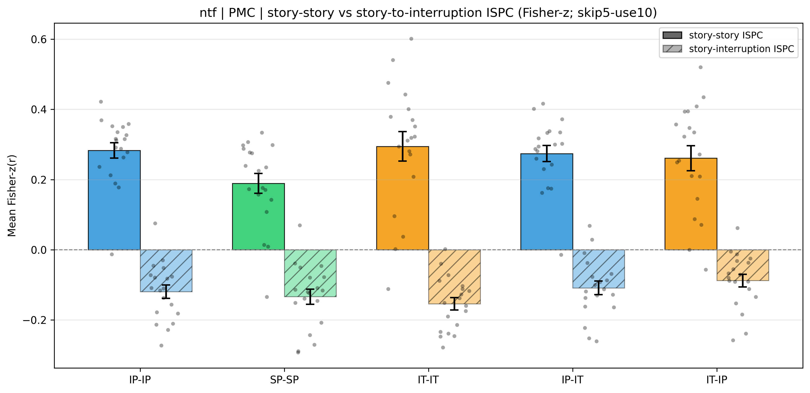
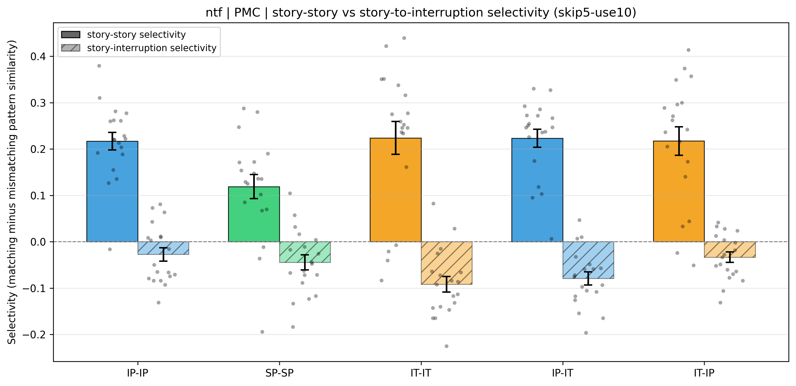
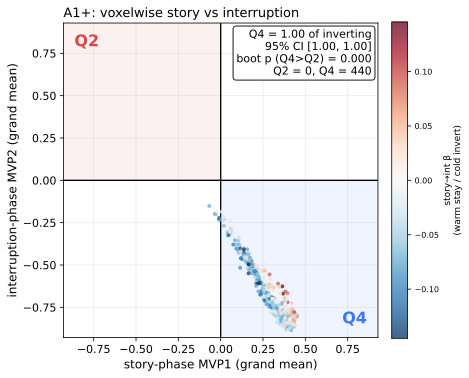
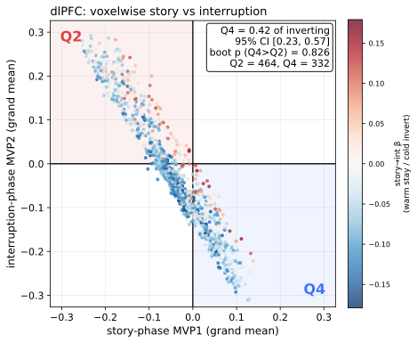
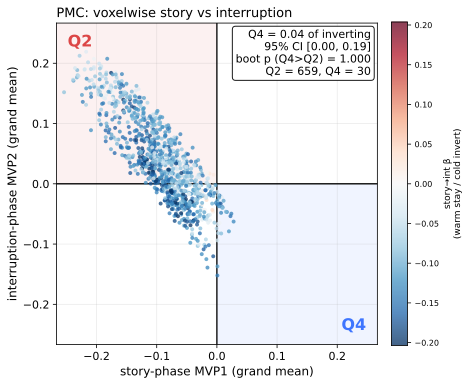
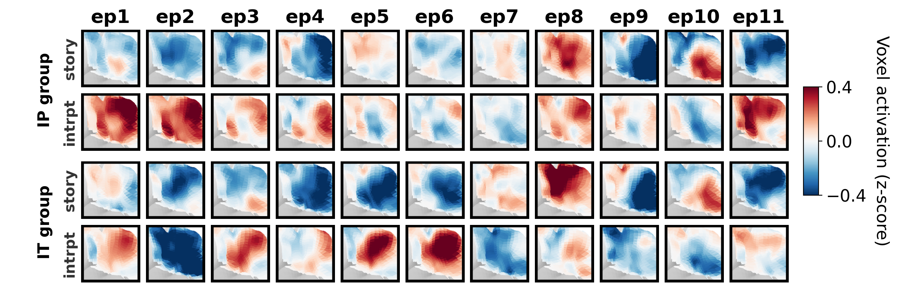

The three story-to-interruption analyses of Result 3 are repeated on the second (live-storytelling narrative), which the main analyses examined only for the interruption-phase pattern tests of Result 2 (Section S7). The narrative is the only change: the analysis windows (a 10-TR story-phase template ending one TR before interruption onset, and a skip-5 / use-10 interruption-phase template), the template-pattern Pearson similarity, the five inter-subject schemes (three within-condition — intact pause with intact pause (IP-IP), scrambled pause with scrambled pause (SP-SP), and theory-of-mind interruption with theory-of-mind interruption (IT-IT) — and two across-condition, IP-IT and IT-IP), the jackknife sign-flip and within-participant permutation tests, and the report layout are identical to Result 3.1, 3.2, and 3.3. The live-storytelling narrative has 11 interruption epochs (the main narrative has 17). The three results are reported below in one report; the per-cell methods and column definitions match Result 3.1, 3.2, and 3.3.
Negative story-to-interruption inter-subject pattern correlation (Fisher-z group mean θ̂z) indicates that the interruption-phase pattern is inverted relative to the preceding story phase. The story-story column is the matched-window positive inter-subject pattern correlation, shown for scale.
| Scheme | n | ISPC mean (r) (story-int) |
ISPC mean (Fisher-z, θ̂z) (story-int) | SE | 95% CI | p (sign-flip) | θ̂z (story-story) |
|---|---|---|---|---|---|---|---|
| IP-IP | 19 | -0.1108 | -0.1196 | 0.0191 | [-0.1570, -0.0822] | 0.0014 | 0.2831 |
| SP-SP | 19 | -0.1258 | -0.1337 | 0.0215 | [-0.1759, -0.0915] | 1.00e-04 | 0.1891 |
| IT-IT | 19 | -0.1444 | -0.1541 | 0.0177 | [-0.1887, -0.1194] | 1.00e-04 | 0.2943 |
| IP-IT | 19 | -0.1001 | -0.1084 | 0.0197 | [-0.1470, -0.0698] | 1.00e-04 | 0.2740 |
| IT-IP | 19 | -0.0821 | -0.0879 | 0.0183 | [-0.1237, -0.0520] | 1.00e-04 | 0.2607 |

Inversion selectivity Δ is the per-participant difference between the story-to-matching-interruption and story-to-mismatching-interruption inter-subject pattern correlation; a more negative matching value (Δ < 0) means the inversion is epoch-specific.
| Scheme | Δ (matching minus mismatching) | 95% CI | p (perm) | Cohen's dz | n |
|---|---|---|---|---|---|
| IP-IP | -0.0274 | [-0.0541, 0.0007] | 0.0713 | -0.433 | 19 |
| SP-SP | -0.0447 | [-0.0753, -0.0136] | 0.0113 | -0.634 | 19 |
| IT-IT | -0.0917 | [-0.1223, -0.0582] | 1.00e-04 | -1.255 | 19 |
| IP-IT | -0.0791 | [-0.1058, -0.0518] | 1.00e-04 | -1.286 | 19 |
| IT-IP | -0.0334 | [-0.0550, -0.0115] | 0.0348 | -0.669 | 19 |

Because the intact-pause and scrambled-pause conditions were run in separate groups of participants, their group-mean inversion selectivity (the per-participant matching minus mismatching story-to-interruption inter-subject pattern correlation, Δ) was compared with a Welch two-sample t-test for independent samples (two-sided). On the live-storytelling narrative, inversion selectivity in the intact-pause group (mean Δ = -0.0274, n = 19) did not differ significantly from the scrambled-pause group (mean Δ = -0.0447, n = 19): t(35.6) = 0.800, p = 0.4290, Cohen’s d = 0.260.
A pure post-stimulus hemodynamic undershoot predicts that voxels which invert from story to interruption do so asymmetrically, favoring the Q4 (positive-to-negative) direction over Q2 (negative-to-positive). Each panel shows one dot per voxel (grand-mean story-window value on the horizontal axis, interruption-window value on the vertical); the table reports the one-sided participant-bootstrap test that inverting voxels favor Q4. A region is consistent with undershoot only when the Q4 fraction sits reliably above 0.5.



| ROI | voxels | Q2 | Q4 | pooled Q2:Q4 ratio (reference) | Q4 fraction of inverting voxels [95% participant-bootstrap CI] | bootstrap p (Q4 > Q2, one-sided) | sig | consistent with undershoot? (CI above 0.5) |
|---|---|---|---|---|---|---|---|---|
| A1+ | 447 | 0 | 440 | 0.000 | 1.000 [1.000, 1.000] | 2.00e-04 | *** | yes |
| dlPFC | 1163 | 464 | 332 | 1.398 | 0.417 [0.225, 0.573] | 0.8262 | n.s. | no |
| PMC | 972 | 659 | 30 | 21.967 | 0.044 [0.001, 0.190] | 1.0000 | n.s. | no |
The tests above summarize the story-to-interruption inversion as a single number per participant. This wall shows the patterns those numbers are computed from. Each tile is the group-mean PMC pattern for one interruption epoch, painted on the left-hemisphere cortical surface (red = above the participant’s mean activation for that voxel, blue = below). Rows one and two are the intact-pause (IP) condition and rows three and four the theory-of-mind interruption (IT) condition; within each condition the upper row is the story-phase template (the 10 TR window ending one TR before interruption onset) and the lower row the interruption-phase template (skip-5 / use-10). The inversion is visible as a reversal of the red and blue territory between the story row and the interruption row directly beneath it. These are the same templates, windows, region, and participants as Result 3.1 above; only the display is new. This is the live-storytelling narrative counterpart of the main-narrative wall shown in Figure 3.

Tile width and height, color map, and color range are identical to the main-narrative wall; the panel is narrower only because the live-storytelling narrative has 11 interruption epochs rather than 17.